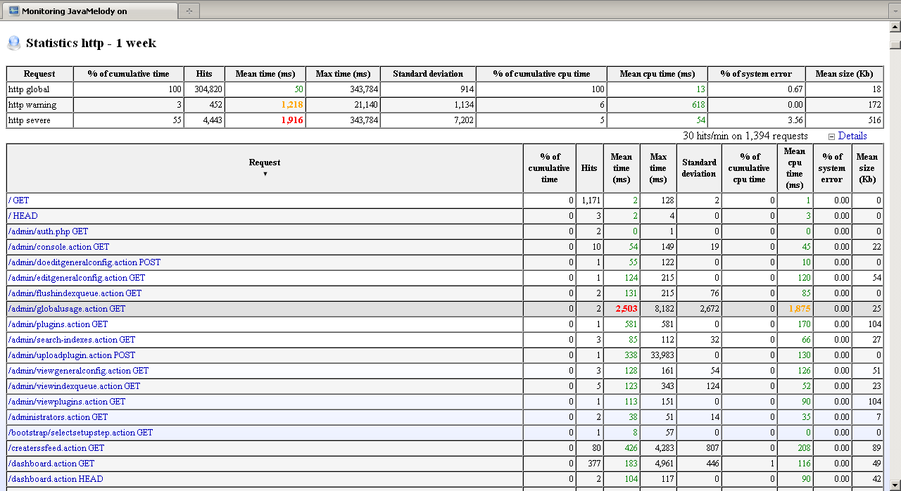
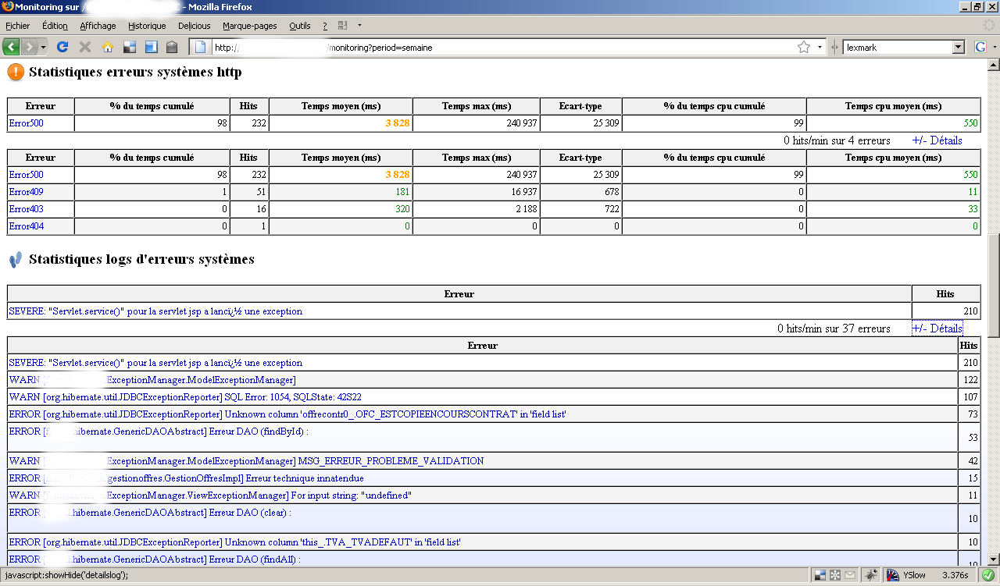
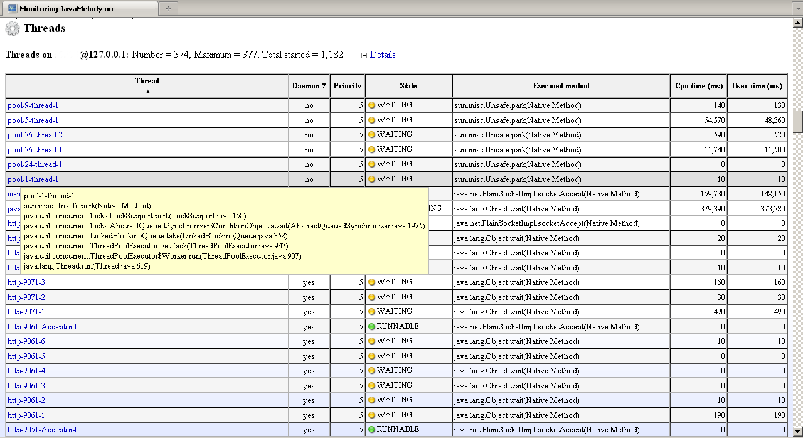
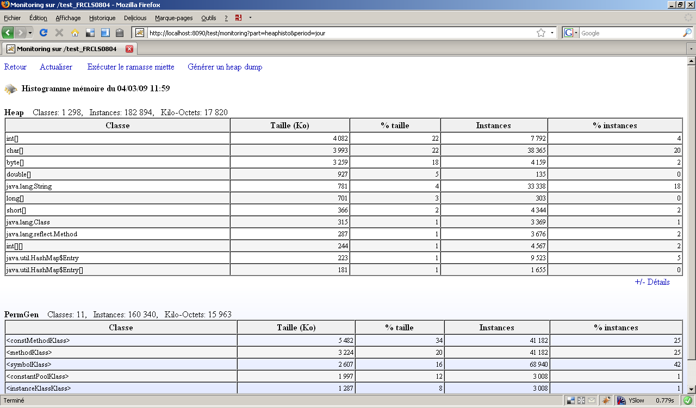
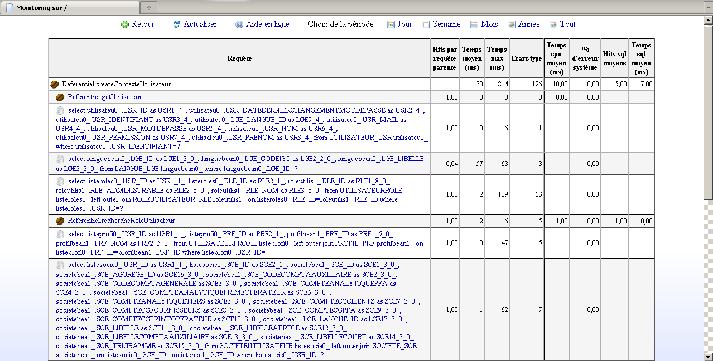
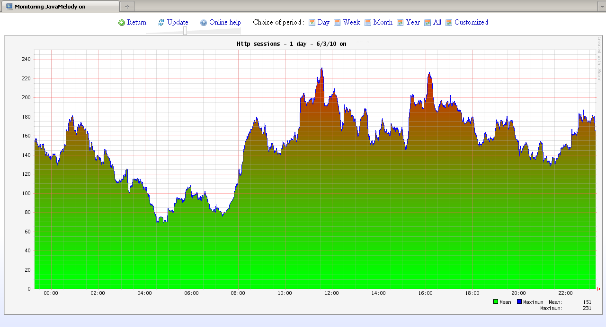
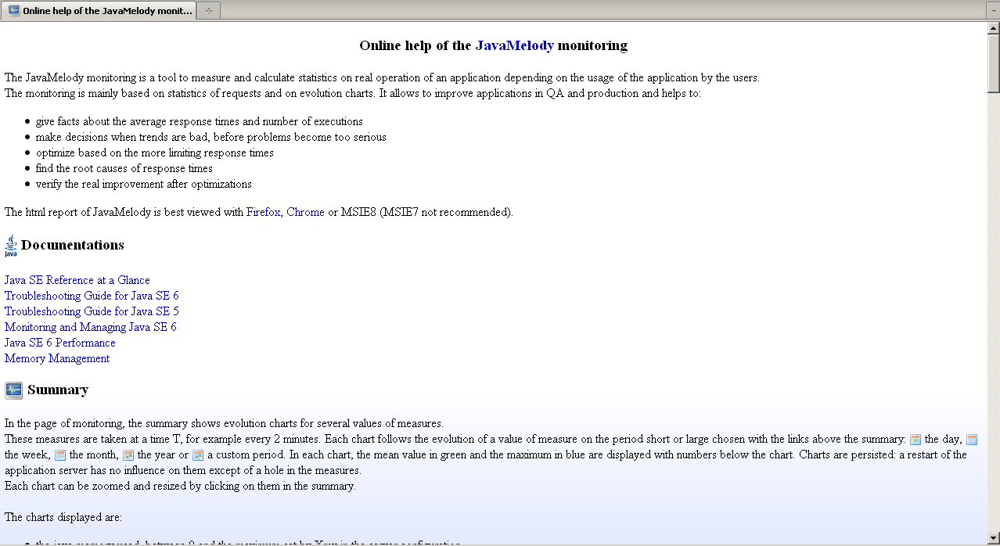

Charts

Other charts

Statistics of requests

French (http, sql, spring, jsp)

German (http, sql, spring, jsp)

Http errors and logs of errors

Current requests

System informations

Threads

Caches of data (ehcache)

Jobs (quartz)

Http sessions

Memory histogram

Processes

Drill-down (and ejb/spring/guice/services components)

Zoom on chart

Mysql process

Oracle long requests


Online help